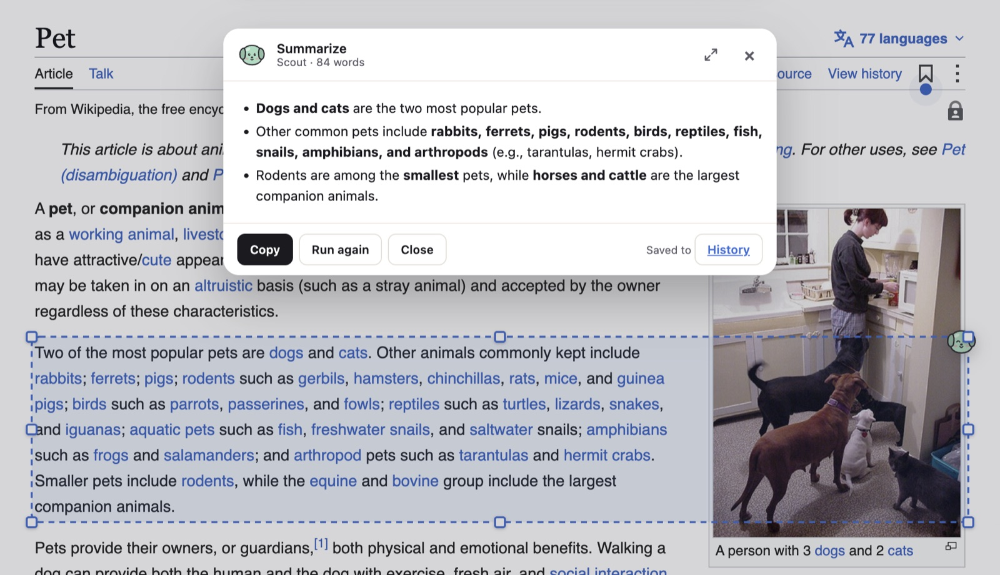
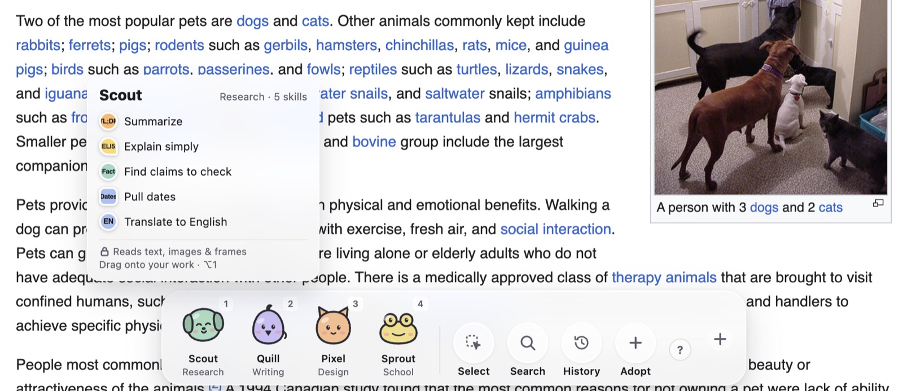
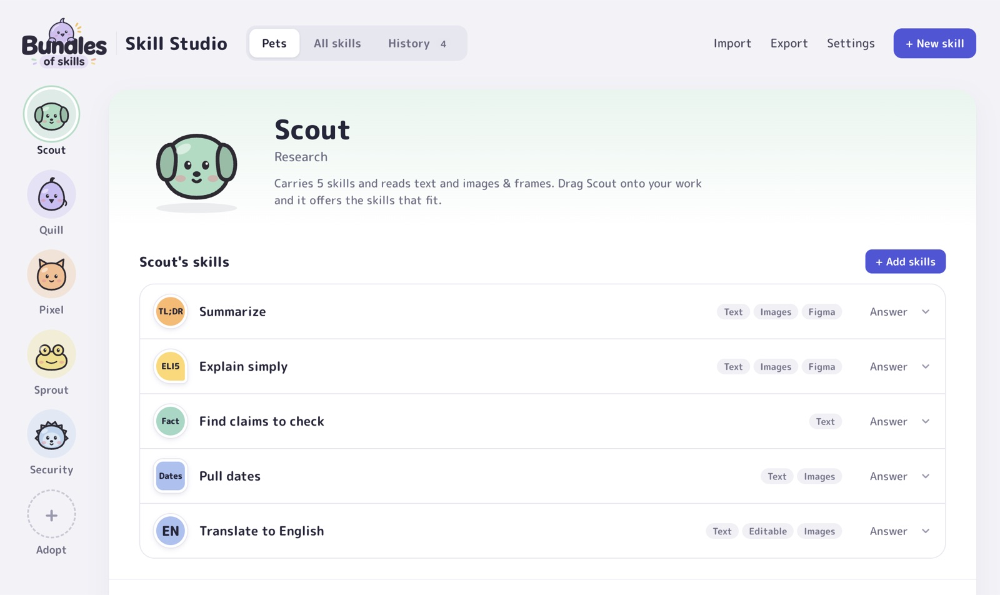
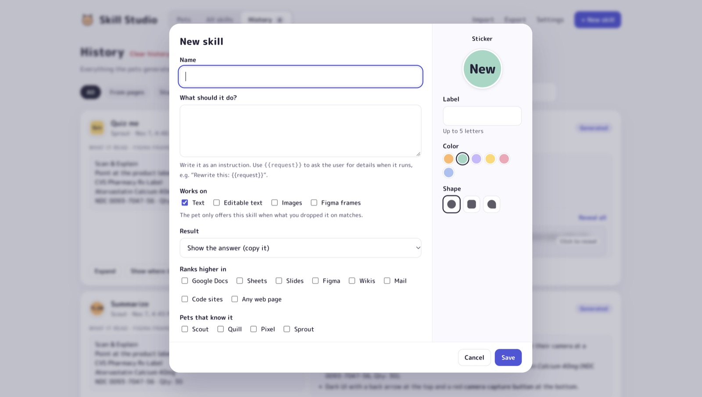
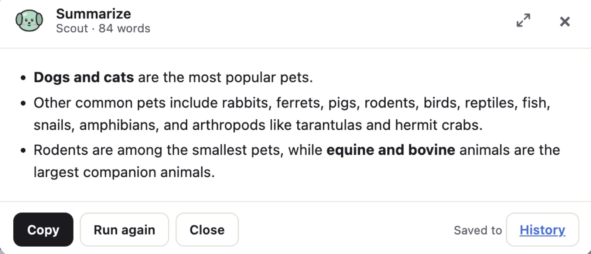
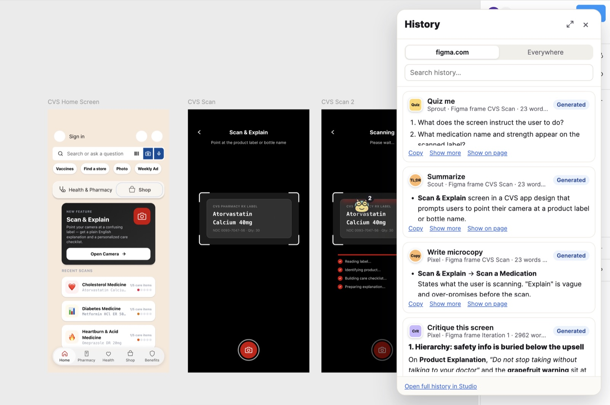

All work
🏆 Top 5 of 69 teamsLive demo below
Bundles of Skills
A squad of AI pets for your browser. Each pet is a bundle of skills with its own permissions. Drag one onto your work and it offers only the skills that fit. Anything that would change your work comes back as a proposal you approve first.
AI help that respects what's yours
Most AI assistants live in a separate chat window. You copy text out, paste it in, and copy the answer back. We wanted the help to come to the work instead, without the assistant getting free rein over your documents.
Our answer was a squad of pets. Each pet is a small, understandable bundle: a few skills, a set of things it's allowed to read, and a personality. Scout reads, Quill writes, Pixel looks at images, and Security, a hedgehog, guards every other pet. You drag a pet onto a paragraph, a text field, an image, a Google Docs page, or a Figma frame, and it offers only the skills that make sense there.

The extension, running on this page
This is a working slice of the real extension. It uses the project's own pet art, its on-device Security scanner, and its Claude client, copied straight from the repo. Drag a pet onto a paragraph (or tap a pet, then tap a paragraph). Security's skills run entirely in your browser, so try them on paragraphs 2 and 3.
Your squad
Three pieces
1. The squad dock
Your pets sit in a small dock at the edge of every page. Hover over a pet to see what it carries, then drag it onto anything. The pet reads what's under it and suggests only the skills that apply, so text skills for a paragraph and vision skills for an image. When nothing is selected, a command bar (Alt+Shift+P) searches every skill.

2. Skill Studio
The Studio is where you shape the squad. Every skill has an instruction, what it works on, what kind of result it produces (an answer, a rewrite, or comments), and a sticker. You can teach a pet a skill by dragging the skill's card onto it, or build a new skill and test it with Try it before it ever touches a real page.


3. Results you approve
Answers show up in a card next to the content. Anything that would change your work, like a rewrite in a text field or a comment on a Figma frame, comes back as a proposal with a green action label. Nothing is written until you click it.


Ten concepts, ranked by what we could prove
We didn't start with the pets. We started with ten interaction concepts for an "AI skill companion" with names like Fetch (drop a pet on a spot), Peek (select text and the pet guesses), Burrow (a hotkey command bar), Charm collar (loadouts with shared docs), and Whistle (voice). Then we ranked them by how cheaply each one could be proven and how risky it was.
"The risk is that it gets annoying." That one line shaped Peek's ignore timeout, per-site blocklist, and off switch.
That ranking set the build order. Burrow was the lowest-risk concept and worked everywhere. Peek was the magic moment but the most likely to irritate people, so it shipped with guardrails. Fetch and the pet squad became the core metaphor. Voice went to the bottom of the list because it needs a desktop app.
Mapping the platform before committing
We wrote down exactly what a browser extension can and can't do before designing interactions that depend on it. That surfaced several things that matter for the user experience:
- Google Docs draws text on a canvas, so ordinary text selection comes back empty. We read it with a screenshot and a vision model instead, and the UI says so honestly.
- Hotkeys only work while Chrome is focused, and you get only four suggested shortcuts. A double-tap of ⌥ is impossible, so that concept moved to a future desktop app.
- Other apps are out of reach from an extension. That gave us a clear two-stage plan: an extension gets about 70% of the experience in days, and a desktop app (Tauri/Electron) handles "any app on my computer".
Designing for trust
Three principles carried through the whole product:
- Scoped permissions. Each pet has its own "can read" switches, so you know what each one can see.
- Proposals, not actions. Changes are always previewed and approved.
- Visible safety. Security is a character in the squad, not a hidden setting, so people can see protection happening.
A guard pet for AI safety
We built for the Sandia Security Track: implementing AI securely, securing agentic workflows, and making AI security visible to everyday users. Security, the hedgehog, does two jobs.
- On-device skills"Check for hidden instructions" finds prompt injection, including invisible Unicode tricks. "Spot sensitive data" finds API keys, passwords, emails, and Luhn-checked card numbers. Neither ever calls a model.
- Guard before sendEvery request from every pet passes through the extension's service worker. Secrets and personal data are masked there before anything reaches the network, and no page script can bypass it.
- Content stays dataPicked content is wrapped and treated strictly as data, so text on a page can't take over a pet.
- Output is checked tooResults are scanned for data-leaking links and hidden characters before you approve them.
The demo above uses this same scanner. Drop Security on the second paragraph to see it catch the hidden "ignore all previous instructions" note and the zero-width characters at the end.
Run the real thing
The full extension does much more than this page: Google Docs, Figma, images, the Studio, and history. To install it from source:
- Clone the repo, then run
npm installandnpm run build. - Open
chrome://extensionsand turn on Developer mode. - Click Load unpacked and choose the
extension/folder. - Open the Skill Studio from the toolbar icon and add your Anthropic API key under Settings.
What I'd take forward
Ranking concepts by "cheapest to prove" kept a weekend hackathon build focused, and it's how I'd scope any early product. The biggest lesson was that safety features work better when people can see them. Turning the guard into a character made it something judges and testers wanted to try, not a checkbox they'd skip past.
Next steps: a small backend so users don't have to bring their own key, loadouts that auto-equip by site, and a usability study of whether a pet metaphor actually helps people understand AI permissions better than a settings page does.